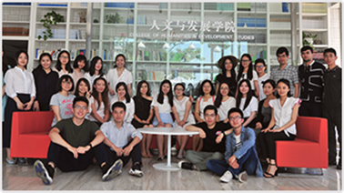
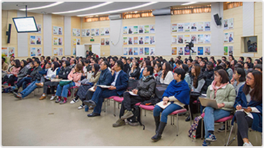
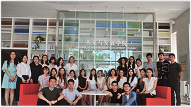

Development Studies
In end of 2002, the College of Humanities and Development of Agricultural University of China was established on the basis of the former Institute of Rural Development, College of Humanities and Social Sciences and other departments. Graduate education in our college, has made rapid progress and development, has established a relatively complete discipline, the training level is perfect. Advanced research personnel training system with comprehensive and relatively complete education system. There are two Ph.D. programs in the field of rural development and management, sociology (in the process of examination and approval); Education, Economics and Management, Sociology, Economic Law.
Professional Prospects:
In order to study and solve the problem that the traditional disciplines such as depletion of resources , environmental degradation , poverty and unequal opportunity of human being cannot be dealt with independently , the development course is developed internationally in the 1970s to guide the development research , practice and policy development of developing countries.
Subject Strength: At present , 45 teachers , including 17 professors and 23 associate professors , have worked in the fields of economics , management , sociology , etc...
Train Objective: On the one hand, this major trains the compound talents who master the theories and methods of rural development management, on the other hand, it trains the talents of international development management, which requires the graduates to master the basic theory of the development discipline. Basic methodology for development research, or basic skills in international development management, development planning and project implementation at the macro policy level, at the institutional level and at the community level. Ability to monitor, evaluate and organize management. Graduates will become middle and senior professionals engaged in rural development research, development management and development practices, and will be employed in national and international governmental or non-governmental development agencies. Policy research and development organizations, as well as non-profit organizations.
Professional Features: On the one hand, this major trains the compound talents who master the theories and methods of rural development management, on the other hand, it trains the talents of international development management, which requires the graduates to master the basic theory of the development discipline. Basic methodology for development research, or basic skills in international development management, development planning and project implementation at the macro policy level, at the institutional level and at the community level. Ability to monitor, evaluate and organize management. Graduates will become middle and senior professionals engaged in rural development research, development management and development practices, and will be employed in national and international governmental or non-governmental development agencies. Policy research and development organizations, as well as non-profit organizations.
Main Courses: General Development Studies, Development Research methods, participatory Development Planning, Development Project Management, Communication and Communication, Intercultural Communication, Modern training Theory and methods, Promotion Studies, International Development Assistance, Environment and Development. Human resource management, civil society organization management, regional development analysis and so on.
Subject Strength: At present , 45 teachers , including 17 professors and 23 associate professors , have worked in the fields of economics , management , sociology , etc...
Train Objective: On the one hand, this major trains the compound talents who master the theories and methods of rural development management, on the other hand, it trains the talents of international development management, which requires the graduates to master the basic theory of the development discipline. Basic methodology for development research, or basic skills in international development management, development planning and project implementation at the macro policy level, at the institutional level and at the community level. Ability to monitor, evaluate and organize management. Graduates will become middle and senior professionals engaged in rural development research, development management and development practices, and will be employed in national and international governmental or non-governmental development agencies. Policy research and development organizations, as well as non-profit organizations.
Professional Features: On the one hand, this major trains the compound talents who master the theories and methods of rural development management, on the other hand, it trains the talents of international development management, which requires the graduates to master the basic theory of the development discipline. Basic methodology for development research, or basic skills in international development management, development planning and project implementation at the macro policy level, at the institutional level and at the community level. Ability to monitor, evaluate and organize management. Graduates will become middle and senior professionals engaged in rural development research, development management and development practices, and will be employed in national and international governmental or non-governmental development agencies. Policy research and development organizations, as well as non-profit organizations.
Main Courses: General Development Studies, Development Research methods, participatory Development Planning, Development Project Management, Communication and Communication, Intercultural Communication, Modern training Theory and methods, Promotion Studies, International Development Assistance, Environment and Development. Human resource management, civil society organization management, regional development analysis and so on.


